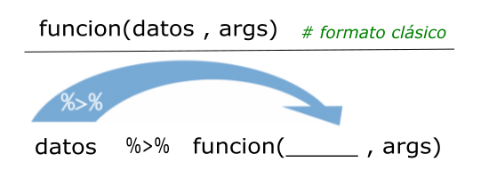

install.packages("tidyverse")Introducción a tidyverse
Christian Ballejo ![]()
Tamara Ricardo
Introducción
Tidyverse (Wickham et al. 2019) es el nombre que recibe el conjunto de paquetes desarrollados y/o promovidos por Hadley Wickham (jefe científico en Posit/RStudio) y su equipo, orientado al trabajo de ciencia de datos con R. Estos paquetes están diseñados para integrarse de manera coherente, compartiendo una misma filosofía de diseño conocida como The tidy tools manifesto.
Los cuatro principios básicos sobre los que se construye tidyverse son:
Reutilización de estructuras de datos
Resolución de problemas complejos combinando varias piezas sencillas
Uso de programación funcional
Diseño orientado a las personas
Los paquetes incluidos cubren todas las etapas del análisis de datos dentro de R: importación y ordenamiento de los datos (tidy data), transformación, visualización, modelado y la posterior comunicación de resultados.
La palabra tidy se traduce como “ordenado”, y hace referencia a una estructura específica que deben cumplir los datos:
- Cada variable es una columna de la tabla de datos.
- Cada observación es una fila de la tabla de datos.
- Cada tabla responde a una unidad de observación o análisis.

Además de los paquetes principales, al instalar tidyverse se incluyen otros que permiten trabajar con fechas, cadenas de caracteres o factores, también siguiendo los mismos principios.
Uno de los objetivos de los desarrolladores fue dotar a la sintaxis de estos paquetes de una gramática clara: funciones cuyos nombres y argumentos permiten construir “frases” que sean semánticamente comprensibles. Un ejemplo de esto se ve en el paquete dplyr, donde la mayoría de las funciones son verbos en inglés como filter(), mutate(), summarise(), lo que facilita su lectura y comprensión.
El paquete tidyverse (versión 2.0.0) puede instalarse desde el repositorio oficial CRAN mediante el menú Packages de RStudio, o ejecutando el siguiente código:
Una vez instalado, se activa mediante:
Al activarlo, se muestra un mensaje con la versión instalada, la lista de paquetes que se cargan automáticamente y posibles conflictos de nombres entre funciones. Esto es habitual cuando se utilizan múltiples paquetes, ya que algunas funciones pueden llamarse igual. Por ejemplo, la función filter() existe tanto en el paquete stats como en dplyr. Al cargar tidyverse, R avisa de esta superposición:
✖️dplyr::filter() masks stats::filter()
Cuando necesitamos asegurarnos de que estamos usando la función de un paquete específico, se recomienda usar la notación ::, por ejemplo:
Una estrategia útil cuando trabajamos con varios paquetes es cargar tidyverse al final de la lista de paquetes, para que sus funciones sobrescriban las de otros paquetes si fuese necesario:
Los paquetes que se instalan con la versión actual de tidyverse pueden consultarse ejecutando:
[1] "broom" "conflicted" "cli" "dbplyr"
[5] "dplyr" "dtplyr" "forcats" "ggplot2"
[9] "googledrive" "googlesheets4" "haven" "hms"
[13] "httr" "jsonlite" "lubridate" "magrittr"
[17] "modelr" "pillar" "purrr" "ragg"
[21] "readr" "readxl" "reprex" "rlang"
[25] "rstudioapi" "rvest" "stringr" "tibble"
[29] "tidyr" "xml2" "tidyverse" Además, existen muchos otros paquetes que siguen la misma filosofía pero no están incluidos por defecto. En esos casos, deben instalarse y activarse individualmente.
Para profundizar el uso de tidyverse, se recomienda consultar las siguientes fuentes:
Sitio oficial: https://www.tidyverse.org/
Libro R para Ciencia de Datos: r4ds o la nueva versión r4ds 2e (por ahora solo disponible en inglés).
Dataframes con tibble
Uno de los paquetes que forman parte del núcleo básico de tidyverse es tibble (Müller y Wickham 2023), que introduce una versión moderna del objeto data.frame. Todas las funciones que generan tablas de datos en tidyverse devuelven objetos tibble (tbl_df), los cuales son más eficientes y amigables para el flujo de trabajo.
Las principales ventajas de trabajar con tibble son:
Impresión en consola más legible y controlada (muestran un número limitado de filas y columnas).
No cambian automáticamente el tipo de datos.
Permiten nombres de columnas con espacios o caracteres especiales si se encierran entre comillas invertidas
`(aunque no se recomienda).
Para crear un objeto tibble manualmente usamos el siguiente código:
Tuberías con magrittr
Una de las incorporaciones más útiles y transversales del ecosistema tidyverse es el uso de “tuberías” o pipe operators. Una tubería conecta un bloque de código con otro, permitiendo encadenar operaciones de manera legible. El operador %>%, proveniente del paquete magrittr (Bache y Wickham 2022), transforma llamadas de funciones anidadas (con múltiples paréntesis) en una secuencia de pasos más simple de leer y escribir.
A partir de la versión 4.1.0 de R, también se incorporó una tubería nativa (|>), con un comportamiento muy similar. Ambas opciones son válidas y su uso es prácticamente equivalente.
Este enfoque refleja el principio de que cada función representa un paso en una secuencia lógica de transformación de datos. La forma de trabajar se puede ver en el siguiente esquema general:

A continuación, mostramos un ejemplo comparativo de cómo cambia la sintaxis usando el dataset incorporado en R mtcars, que contiene datos sobre autos:
mpg cyl disp hp drat wt
Mazda RX4 4.582576 2.449490 12.64911 10.488088 1.974842 1.618641
Mazda RX4 Wag 4.582576 2.449490 12.64911 10.488088 1.974842 1.695582
Datsun 710 4.774935 2.000000 10.39230 9.643651 1.962142 1.523155
Hornet 4 Drive 4.626013 2.449490 16.06238 10.488088 1.754993 1.793042
Hornet Sportabout 4.324350 2.828427 18.97367 13.228757 1.774824 1.854724
Valiant 4.254409 2.449490 15.00000 10.246951 1.661325 1.860108
qsec vs am gear carb
Mazda RX4 4.057093 0 1 2.000000 2.000000
Mazda RX4 Wag 4.125530 0 1 2.000000 2.000000
Datsun 710 4.313931 1 1 2.000000 1.000000
Hornet 4 Drive 4.409082 1 0 1.732051 1.000000
Hornet Sportabout 4.125530 0 0 1.732051 1.414214
Valiant 4.496665 1 0 1.732051 1.000000En la línea de código anterior estamos pidiendo mostrar la cabecera (6 primeras observaciones de la tabla de datos) de la raíz cuadrada de los valores de la tabla mtcars, en formato del lenguaje clásico (anidado).
Ahora activamos magrittr y ejecutamos la línea anterior en formato tubería:
mpg cyl disp hp drat wt
Mazda RX4 4.582576 2.449490 12.64911 10.488088 1.974842 1.618641
Mazda RX4 Wag 4.582576 2.449490 12.64911 10.488088 1.974842 1.695582
Datsun 710 4.774935 2.000000 10.39230 9.643651 1.962142 1.523155
Hornet 4 Drive 4.626013 2.449490 16.06238 10.488088 1.754993 1.793042
Hornet Sportabout 4.324350 2.828427 18.97367 13.228757 1.774824 1.854724
Valiant 4.254409 2.449490 15.00000 10.246951 1.661325 1.860108
qsec vs am gear carb
Mazda RX4 4.057093 0 1 2.000000 2.000000
Mazda RX4 Wag 4.125530 0 1 2.000000 2.000000
Datsun 710 4.313931 1 1 2.000000 1.000000
Hornet 4 Drive 4.409082 1 0 1.732051 1.000000
Hornet Sportabout 4.125530 0 0 1.732051 1.414214
Valiant 4.496665 1 0 1.732051 1.000000Podemos hacer lo mismo con la tubería nativa de R sin activar ningún paquete (revisar que esté activada desde Tools > Global Options):
mpg cyl disp hp drat wt
Mazda RX4 4.582576 2.449490 12.64911 10.488088 1.974842 1.618641
Mazda RX4 Wag 4.582576 2.449490 12.64911 10.488088 1.974842 1.695582
Datsun 710 4.774935 2.000000 10.39230 9.643651 1.962142 1.523155
Hornet 4 Drive 4.626013 2.449490 16.06238 10.488088 1.754993 1.793042
Hornet Sportabout 4.324350 2.828427 18.97367 13.228757 1.774824 1.854724
Valiant 4.254409 2.449490 15.00000 10.246951 1.661325 1.860108
qsec vs am gear carb
Mazda RX4 4.057093 0 1 2.000000 2.000000
Mazda RX4 Wag 4.125530 0 1 2.000000 2.000000
Datsun 710 4.313931 1 1 2.000000 1.000000
Hornet 4 Drive 4.409082 1 0 1.732051 1.000000
Hornet Sportabout 4.125530 0 0 1.732051 1.414214
Valiant 4.496665 1 0 1.732051 1.000000Las tuberías le dan mucha mas claridad al código separandolo en partes, como si fuesen oraciones de un párrafo.
Lectura y escritura de datos
Archivos de texto plano con readr
El paquete readr (Wickham, Hester, y Bryan 2024) contiene funciones similares a las de la familia read.table() de R base, pero desarrollados bajo el ecosistema tidyverse.
Los archivos de texto plano (ASCII u otras codificaciones) son universalmente utilizados por la mayoría de los gestores de bases de datos y planillas de cálculo. Generalmente se encuentran con extensiones .txt o .csv (por comma-separated values) y son el tipo de archivo de datos más habitual en R.
Estos datos planos tienen dos características principales:
- La cabecera (en inglés header).
- El carácter o símbolo separador que indica la separación de columnas: pueden estar separadas por comas, punto y coma, tabulación, etc.
La presencia o no de una cabecera se maneja con los argumentos col_names y skip:
col_names = TRUEindica que la primera fila contiene los nombres de las columnas (cabecera).col_names = FALSEindica que no hay cabecera y las columnas se nombran automáticamente (X1,X2, etc).skip = 0(valor por defecto) lee los datos desde la primera fila, pero si hay encabezados complejos (por ejemplo, títulos y subtítulos ), se puede indicar cuántas filas deben omitirse. Ejemplo:skip = 5omite las primeras 5 filas del archivo.
Otro aspecto a considerar es el carácter separador utilizado para indicar la separación entre columnas. Los separadores más comunes son:
coma (
,)punto y coma (
;)tabulación (
TAB)espacio (
" ")barra vertical o pipe (
|)
Funciones de lectura
Algunas de las funciones del paquete asumen un separador particular. Por caso read_csv() lee separados por coma y read_tsv() separado por tabulaciones, pero la función read_delim() permite que definamos el separador a través del argumento delim.
En forma detallada el paquete readr soporta siete formatos de archivo a partir de siete funciones:
-
read_csv(): archivos separados por comas (CSV). -
read_tsv(): archivos separados por tabulaciones. -
read_delim(): archivos separados con delimitadores generales. -
read_fwf(): archivos con columnas de ancho fijo. -
read_table(): archivos formato tabla con columnas separadas por espacios. -
read_log(): archivos log web.
En comparación con las funciones R base, las funciones de readr:
Usan un esquema de nombres consistente de parámetros.
Son más rápidas.
Analizan eficientemente los formatos de datos comunes (especialmente fechas y horas).
Muestra una barra de progreso para archivos grandes.
Vienen incluidas dentro de
tidyversepero también pueden usarse de forma independiente:
A modo de ejemplo, leeremos un archivo sin cabecera separado por comas bajo el nombre datos:
datos <- read_csv("datos/ejemplo-datos.csv",
col_names = F)
datos# A tibble: 4 × 5
X1 X2 X3 X4 X5
<dbl> <chr> <chr> <chr> <date>
1 9 Leone Fernando M 1958-12-24
2 26 Garcia Esteban M 1954-01-21
3 35 Salamone Nicolas M 1993-06-27
4 48 Gonzalez Viviana F 1965-06-21Leemos el mismo archivo con cabecera y separado por punto y comas, bajo el nombre info:
info <- read_csv2("datos/ejemplo-datos-header.csv",
col_names = T)
info# A tibble: 4 × 5
Iden Apellido Nombre Sexo FNac
<dbl> <chr> <chr> <chr> <date>
1 9 Leone Fernando M 1958-12-24
2 26 Garcia Laura M 1954-01-21
3 35 Salamone Nicolas M 1993-06-27
4 48 Gonzalez Viviana F 1965-06-21En estos ejemplos:
read_csv()espera comas como separadorread_csv2()espera punto y coma como separador
Al leer un archivo, readr intenta adivinar automáticamente el tipo de dato de cada columna (parse). Si no hay cabecera, los nombres de columna serán X1, X2, etc.
Podemos inspeccionar la estructura de un dataframe con glimpse():
glimpse(info)Rows: 4
Columns: 5
$ Iden <dbl> 9, 26, 35, 48
$ Apellido <chr> "Leone", "Garcia", "Salamone", "Gonzalez"
$ Nombre <chr> "Fernando", "Laura", "Nicolas", "Viviana"
$ Sexo <chr> "M", "M", "M", "F"
$ FNac <date> 1958-12-24, 1954-01-21, 1993-06-27, 1965-06-21Los tipos de datos posibles son:
character(<chr>)integer,doubleonumeric(<int>,<dbl>)logical(<lgl>)date,datetime, etc.
Por ejemplo, columnas con enteros pueden aparecer como <dbl> si se interpretan como double, y las fechas como <date>.
Agregamos unos argumentos más y ejemplificamos la sintaxis con read_delim() para leer un archivo con cabecera compleja (la tabla comienza en la fila 9) separado por caracteres | (pipes).
read_delim("ejemplo-datos-header-skip.txt",
col_names = T,
skip = 8,
delim = "|")Importante: No olvides asignar la lectura a un nombre para guardar el dataframe dentro del entorno de trabajo (por ejemplo:
datos <-).
Funciones de escritura
El paquete también incluye funciones para escribir archivos de texto plano, con formatos espejo de las funciones de lectura más comunes:
-
write_csv(): escribe archivos separados por comas -
write_csv2(): escribe archivos separados por punto y comas -
write_tsv(): escribe archivos separados por tabulaciones -
write_delim(): escribe archivos separados con delimitadores definidos por el usuario
Los argumentos son generales y para el caso del último más extensos, dado que hay que definir cual es el separador que deseamos en el archivo. Podemos consultarlos con el siguiente código:
args(write_delim)function (x, file, delim = " ", na = "NA", append = FALSE, col_names = !append,
quote = c("needed", "all", "none"), escape = c("double",
"backslash", "none"), eol = "\n", num_threads = readr_threads(),
progress = show_progress(), path = deprecated(), quote_escape = deprecated())
NULLPor ejemplo para exportar un conjunto de datos en texto plano al que denominaremos “ejemplo.csv“ con separador punto y coma y cabecera incluida podemos hacer:
write_delim(x = datos, file = "ejemplo.csv", delim = ";")o más sencillo, usando la función específica write_csv2():
write_csv2(datos, "ejemplo.csv") # define cabecera y separador ;Lectura de hojas de cálculo con readxl
Uno de los formatos más comunes para almacenar datos son las hojas de cálculo, en particular las creadas con Microsoft Excel. El paquete readxl (Wickham y Bryan 2025), parte del ecosistema tidyverse, permite leer este tipo de archivos.
readxl es compatible con hojas de cálculo de Excel 97-2003, con extensión .xls, y con versiones más recientes, con extensión .xlsx.
Una primera función útil es excel_sheets(), que permite conocer y listar los nombres de las hojas contenidas en un archivo Excel (también llamado libro o workbook).
Por ejemplo, supongamos que tenemos un archivo denominado “datos.xlsx“ y queremos saber por cuantas hojas está compuesto y que nombre tienen:
library(readxl) # hay que activarlo independientemente de tidyverse
excel_sheets("datos/datos.xlsx")[1] "diabetes" "vigilancia" "mortalidad"Esto devuelve, por ejemplo, tres hojas: "diabetes", "vigilancia" y "mortalidad".
Para leer una de estas hojas utilizamos la función read_excel(), cuyos argumentos principales son:
args(read_excel)function (path, sheet = NULL, range = NULL, col_names = TRUE,
col_types = NULL, na = "", trim_ws = TRUE, skip = 0, n_max = Inf,
guess_max = min(1000, n_max), progress = readxl_progress(),
.name_repair = "unique")
NULLEntre los más relevantes encontramos:
path: nombre del archivo y su ubicación (entre comillas)sheet: nombre de la hoja o su número de ordencol_names: si esTRUE, toma la primera fila como nombres de las columnasskip: permite saltear un número determinado de filas antes de comenzar la lectura
Al ejecutar read_excel(), internamente se utiliza la función excel_format() para detectar si el archivo es .xls o .xlsx, y luego se aplica la función específica para cada caso: read_xls() o read_xlsx(). Estas funciones también pueden usarse directamente si se desea.
Supongamos ahora que queremos leer la hoja llamada "diabetes":
diabetes <- read_excel(path = "datos/datos.xlsx",
sheet = "diabetes",
col_names = T)
# mostramos las 6 primeras observaciones
head(diabetes)# A tibble: 6 × 8
A1C hba1 GLUCB SOG Tol_Glucosa DM SM HOMA
<dbl> <dbl> <dbl> <dbl> <chr> <dbl> <dbl> <dbl>
1 6.17 7.9 101 122 IFG 0 1 4.04
2 5.58 7.2 103 100 IFG 0 0 5.03
3 5.38 7.1 103 90 IFG 0 1 2.92
4 5.38 6.6 109 96 IFG 0 1 4.79
5 5.19 6.3 107 69 IFG 0 1 3.06
6 4.89 6 NA 117 IFG 0 0 5.77Observemos que en los argumentos escribimos el nombre del archivo que se encuentra en nuestro proyecto y por lo tanto en nuestra carpeta activa, el nombre de la hoja y nos aseguramos que la primer fila representa a la cabecera de la tabla (sus nombres de variables).
Como readxl forma parte del ecosistema tidyverse el formato de salida es un tibble. En este caso de 23 observaciones por 8 variables.
Ahora leamos la segunda hoja de nombre "vigilancia":
vigilancia <- read_excel(path = "datos/datos.xlsx",
sheet = 2,
col_names = F)
# mostramos las 6 primeras observaciones
head(vigilancia)# A tibble: 6 × 9
...1 ...2 ...3 ...4 ...5 ...6 ...7 ...8 ...9
<dbl> <chr> <dbl> <dbl> <dbl> <dbl> <dbl> <chr> <chr>
1 875 09/28/2015 2015 544080000 1 31 1 F VIGILANCIA EN SALUD …
2 875 42317 2015 544080000 1 35 1 F VIGILANCIA EN SALUD …
3 875 42317 2015 544080000 1 47 1 F VIGILANCIA EN SALUD …
4 307 09/26/2015 2015 544005273 1 23 1 M VIGILANCIA INTEGRADA…
5 307 09/24/2015 2015 544005273 1 19 1 M VIGILANCIA INTEGRADA…
6 875 09/28/2015 2015 544080000 1 63 1 F VIGILANCIA EN SALUD …En este caso, en lugar del nombre de la hoja usamos un 2 que es su ubicación y especificamos col_names = FALSE porque el conjunto de datos no tiene cabecera. readxl asignará nombres genéricos como ...1, ...2, etc.
Finalmente leamos la última hoja disponible del archivo:
mortalidad <- read_excel(path = "datos/datos.xlsx",
sheet = "mortalidad",
col_names = T,
skip = 1)
# mostramos las 6 primeras observaciones
head(mortalidad) # A tibble: 5 × 10
grupo_edad grupo.I.1.1 grupo.II.1.1 grupo.III.1.1 grupo.I.2.1 grupo.II.2.1
<chr> <dbl> <dbl> <dbl> <dbl> <dbl>
1 30-44 41 202 222 539 1438
2 45-59 99 1071 181 759 6210
3 60-69 114 1782 119 985 9238
4 70-79 221 2336 119 1571 12369
5 80+ 362 2492 81 2523 14642
# ℹ 4 more variables: grupo.III.2.1 <dbl>, grupo.I.3.1 <dbl>,
# grupo.II.3.1 <dbl>, grupo.III.3.1 <dbl>Lo novedoso de esta lectura es el argumento skip = 1 que debimos incorporar dado que, en este caso, la hoja de Excel comienza con una línea de título que no pertenece al conjunto de datos. También que el argumento sheet permite el nombre de la hoja elegida entre comillas.
Además de los argumentos generales de read_xl(), podemos mencionar estos otros:
n_max: número máximo de filas a leer.range: rango de celdas a importar (como en Excel, por ejemplo"B3:D87").col_types: define el tipo de datos de cada columna. Valores posibles:"numeric","logical","text","date","skip"(no leer la columna),"guess"(modo predeterminado: la función decide automáticamente el tipo).na: carácter o vector de caracteres que se deben interpretar como valores perdidos (NA). Por defecto, las celdas vacías se interpretan así.
Gestión de datos con dplyr
El paquete dplyr (Wickham et al. 2023) fue desarrollado por Hadley Wickham como una versión optimizada del paquete plyr (Wickham 2011).
Su principal contribución es ofrecer una gramática para la manipulación de datos, basada en funciones que actúan como verbos, lo que facilita la lectura y comprensión del código.
Las funciones clave del paquete permiten realizar las siguientes acciones (verbos):
-
select(): selecciona un conjunto de columnas (variables) -
rename(): renombra variables en un conjunto de datos -
filter(): selecciona un conjunto de filas (observaciones) según una o varias condiciones lógicas -
arrange(): reordena las filas de un conjunto de datos -
mutate(): añade nuevas variables/columnas o transforma variables existentes -
summarise()/summarize(): genera resúmenes estadísticos de diferentes variables en el conjunto de datos -
group_by(): agrupa las observaciones en función de una o más variables, lo que permite realizar operaciones por grupo -
count(): contabiliza valores que se repiten, generando una tabla de frecuencias
Además, al ser parte del ecosistema tidyverse, dplyr integra al operador %>% (pipe) formando una única secuencia de procesamiento o pipeline.
Argumentos comunes en las funciones dplyr
Todas las funciones, básicamente, tienen en común una serie de argumentos.
El primer argumento es el nombre del conjunto de datos (objeto donde esta nuestra tabla de datos).
Los otros argumentos describen que hacer con el conjunto de datos especificado en el primer argumento, podemos referirnos a las columnas en el objeto directamente sin utilizar el operador
$, es decir sólo con el nombre de la columna/variable.El valor de retorno es un nuevo conjunto de datos.
Los conjuntos de datos deben estar bien organizados/estructurados, es decir debe existir una observación por columna y, cada columna representar una variable, medida o característica de esa observación. Es decir, debe cumplir con tidy data.
Activación del paquete
dplyr está incluído en el núcleo base de tidyverse, por lo que se encuentra disponible si tenemos activado a este último.
También se puede activar en forma independiente:
Conjunto de datos para ejemplo
Para visualizar y comprender el funcionamiento de estos “verbos” de manipulación, resulta muy útil contar con ejemplos concretos. Por eso, en esta unidad trabajaremos con un conjunto de datos que nos permitirá practicar el uso de las funciones del paquete.
Recuerden que pueden descargar los datos utilizados en los ejemplos del curso y descomprimirlos en la carpeta donde tengan guardado su proyecto de RStudio.
Uno de los archivos incluidos, “noti-vih.csv”, contiene registros de notificaciones de VIH por jurisdicción en Argentina correspondientes a los años 2015 y 2016.
# asignamos la lectura a datos
datos <- read_csv("datos/noti-vih.csv")
# mostramos las 6 primeras observaciones
head(datos)# A tibble: 6 × 4
jurisdiccion año casos pob
<chr> <dbl> <dbl> <dbl>
1 Buenos Aires 2015 1513 16626374
2 Buenos Aires 2016 957 16789474
3 CABA 2015 901 3054237
4 CABA 2016 427 3050000
5 Catamarca 2015 69 396552
6 Catamarca 2016 51 401575Función select()
La función select() permite elegir columnas específicas de un conjunto de datos, devolviendo una versión “recortada por columnas” del mismo.
A continuación, exploramos algunas formas útiles de seleccionar variables:
Seleccionar todas las variables excepto pob:
datos |>
select(-pob)# A tibble: 48 × 3
jurisdiccion año casos
<chr> <dbl> <dbl>
1 Buenos Aires 2015 1513
2 Buenos Aires 2016 957
3 CABA 2015 901
4 CABA 2016 427
5 Catamarca 2015 69
6 Catamarca 2016 51
7 Chaco 2015 15
8 Chaco 2016 9
9 Chubut 2015 110
10 Chubut 2016 89
# ℹ 38 more rowsOtra forma para el mismo resultado anterior (mediante el operador rango :):
datos |>
select(jurisdiccion:casos)# A tibble: 48 × 3
jurisdiccion año casos
<chr> <dbl> <dbl>
1 Buenos Aires 2015 1513
2 Buenos Aires 2016 957
3 CABA 2015 901
4 CABA 2016 427
5 Catamarca 2015 69
6 Catamarca 2016 51
7 Chaco 2015 15
8 Chaco 2016 9
9 Chubut 2015 110
10 Chubut 2016 89
# ℹ 38 more rowsSeleccionar solamente las variables jurisdiccion y casos:
datos |>
select(jurisdiccion, casos)# A tibble: 48 × 2
jurisdiccion casos
<chr> <dbl>
1 Buenos Aires 1513
2 Buenos Aires 957
3 CABA 901
4 CABA 427
5 Catamarca 69
6 Catamarca 51
7 Chaco 15
8 Chaco 9
9 Chubut 110
10 Chubut 89
# ℹ 38 more rowsLo mismo que el ejemplo anterior, pero usando la posición de las columnas:
datos |>
select(1, 3)# A tibble: 48 × 2
jurisdiccion casos
<chr> <dbl>
1 Buenos Aires 1513
2 Buenos Aires 957
3 CABA 901
4 CABA 427
5 Catamarca 69
6 Catamarca 51
7 Chaco 15
8 Chaco 9
9 Chubut 110
10 Chubut 89
# ℹ 38 more rowsMover la variable año al inicio y mantener todas las demás:
datos |>
select("año", everything())# A tibble: 48 × 4
año jurisdiccion casos pob
<dbl> <chr> <dbl> <dbl>
1 2015 Buenos Aires 1513 16626374
2 2016 Buenos Aires 957 16789474
3 2015 CABA 901 3054237
4 2016 CABA 427 3050000
5 2015 Catamarca 69 396552
6 2016 Catamarca 51 401575
7 2015 Chaco 15 1153846
8 2016 Chaco 9 1125000
9 2015 Chubut 110 567010
10 2016 Chubut 89 577922
# ℹ 38 more rowsOtros posibles argumentos son:
starts_with(): selecciona todas las columnas que comiencen con el patrón indicado.ends_with(): selecciona todas las columnas que terminen con el patrón indicado.contains(): selecciona las columnas que posean el patrón indicado.matches(): similar acontains(), pero permite poner una expresión regular.all_of(): selecciona las variables pasadas en un vector (todos los nombres deben estar presentes o devuelve un error).any_of(): idem anterior excepto que no se genera ningún error para los nombres que no existen.num_range(): selecciona variables con nombre combinados con caracteres y números (ejemplo:num_range("x", 1:3)selecciona las variablesx1,x2yx3.where(): aplica una función a todas las variables y selecciona aquellas para las cuales la función regresa TRUE (por ejemplo:is.numeric()para seleccionar todas las variables numéricas).
Función rename()
La función rename() puede considerarse una extensión de select(). Si bien select() también permite renombrar variables, no resulta muy útil para este fin, ya que descarta todas las variables que no se mencionan explícitamente.
En cambio, rename() permite cambiar el nombre de una o más variables sin eliminar las demás. Solo se modifican los nombres indicados, y el resto del conjunto de datos permanece sin cambios.
Ejemplo: renombrar la variable pob como población:
datos |>
rename("población" = pob)# A tibble: 48 × 4
jurisdiccion año casos población
<chr> <dbl> <dbl> <dbl>
1 Buenos Aires 2015 1513 16626374
2 Buenos Aires 2016 957 16789474
3 CABA 2015 901 3054237
4 CABA 2016 427 3050000
5 Catamarca 2015 69 396552
6 Catamarca 2016 51 401575
7 Chaco 2015 15 1153846
8 Chaco 2016 9 1125000
9 Chubut 2015 110 567010
10 Chubut 2016 89 577922
# ℹ 38 more rowsFunción filter()
La función filter() permite seleccionar filas de un conjunto de datos, produciendo un subconjunto de observaciones.
Veamos un ejemplo sencillo con nuestros datos:
datos |>
filter(jurisdiccion == "Tucuman")# A tibble: 2 × 4
jurisdiccion año casos pob
<chr> <dbl> <dbl> <dbl>
1 Tucuman 2015 258 1592593
2 Tucuman 2016 246 1618421Utiliza los mismos operadores de comparación propios del lenguaje R:
| Operador | Descripción |
|---|---|
| < | Menor que |
| > | Menor que |
| <= | Menor o igual que |
| >= | Mayor o igual que |
| == | Igual que |
| != | No igual que |
| %in% | Es parte de |
| is.na() | Es un valor ausente |
| !is.na() | No es un valor ausente |
Lo mismo con los operadores lógicos que se utilizan como conectores entre las expresiones:
| Operador | Descripción |
|---|---|
| & | AND booleano |
| | | OR booleano |
| xor() | OR exclusivo |
| ! | NOT |
| any() | cualquier TRUE |
| all() | todos TRUE |
Cuando usamos múltiples argumentos separados por coma dentro de filter(), estas se combinan con un operador AND implícito, es decir, cada expresión debe ser verdadera para que la fila sea incluida en la salida.
Por ejemplo, filtramos las observaciones que cumplan que casos sea mayor a 100 y que pob sea menor a 1.000.000:
datos |>
filter(casos > 100, pob < 1000000)# A tibble: 7 × 4
jurisdiccion año casos pob
<chr> <dbl> <dbl> <dbl>
1 Chubut 2015 110 567010
2 Jujuy 2015 160 727273
3 Jujuy 2016 133 734807
4 Neuquen 2015 109 619318
5 Neuquen 2016 101 627329
6 Rio Negro 2015 112 700000
7 Rio Negro 2016 105 709459Para combinar condiciones dentro de una misma variable usamos el operador OR (|) o, de forma más práctica, %in%:
# Con OR
datos |>
filter(jurisdiccion == "Buenos Aires" | jurisdiccion == "La Pampa")# A tibble: 4 × 4
jurisdiccion año casos pob
<chr> <dbl> <dbl> <dbl>
1 Buenos Aires 2015 1513 16626374
2 Buenos Aires 2016 957 16789474
3 La Pampa 2015 57 343373
4 La Pampa 2016 67 345361# A tibble: 4 × 4
jurisdiccion año casos pob
<chr> <dbl> <dbl> <dbl>
1 Buenos Aires 2015 1513 16626374
2 Buenos Aires 2016 957 16789474
3 La Pampa 2015 57 343373
4 La Pampa 2016 67 345361En el siguiente ejemplo, filtramos observaciones del año 2016 con más de 200 casos. El uso de & es equivalente al uso de coma:
datos |>
filter(año == "2016" & casos > 200)# A tibble: 6 × 4
jurisdiccion año casos pob
<chr> <dbl> <dbl> <dbl>
1 Buenos Aires 2016 957 16789474
2 CABA 2016 427 3050000
3 Cordoba 2016 368 3607843
4 Mendoza 2016 254 1909774
5 Salta 2016 230 1352941
6 Tucuman 2016 246 1618421Por último, podemos usar xor() para seleccionar observaciones que cumplan solo una de las condiciones, pero no ambas. Por ejemplo, el siguiente filtro selecciona registros donde el año sea 2016 ó los casos sean mayores a 200, pero no ambos al mismo tiempo (es decir que no se den ambos en TRUE):
# A tibble: 25 × 4
jurisdiccion año casos pob
<chr> <dbl> <dbl> <dbl>
1 Buenos Aires 2015 1513 16626374
2 CABA 2015 901 3054237
3 Catamarca 2016 51 401575
4 Chaco 2016 9 1125000
5 Chubut 2016 89 577922
6 Cordoba 2015 468 3572519
7 Corrientes 2016 99 1076087
8 Entre Rios 2016 109 1329268
9 Formosa 2016 60 582524
10 Jujuy 2016 133 734807
# ℹ 15 more rowsFunción arrange()
La función arrange() se utiliza para ordenar las filas de un conjunto de datos de acuerdo a una o varias columnas/variables. Por defecto, el ordenamiento es ascendente alfanumérico.
Ordenamos la tabla por la variable pob (forma ascendente predeterminada):
datos |>
arrange(pob)# A tibble: 48 × 4
jurisdiccion año casos pob
<chr> <dbl> <dbl> <dbl>
1 Tierra del Fuego 2015 36 152542
2 Tierra del Fuego 2016 34 156682
3 Santa Cruz 2015 65 320197
4 Santa Cruz 2016 59 329609
5 La Pampa 2015 57 343373
6 La Pampa 2016 67 345361
7 La Rioja 2015 41 369369
8 La Rioja 2016 6 375000
9 Catamarca 2015 69 396552
10 Catamarca 2016 51 401575
# ℹ 38 more rowsPara ordenar en forma descendente podemos utilizar desc() dentro de los argumentos de arrange():
# A tibble: 48 × 4
jurisdiccion año casos pob
<chr> <dbl> <dbl> <dbl>
1 Buenos Aires 2016 957 16789474
2 Buenos Aires 2015 1513 16626374
3 Cordoba 2016 368 3607843
4 Cordoba 2015 468 3572519
5 Santa Fe 2016 170 3400000
6 Santa Fe 2015 301 3382022
7 CABA 2015 901 3054237
8 CABA 2016 427 3050000
9 Mendoza 2016 254 1909774
10 Mendoza 2015 316 1880952
# ℹ 38 more rowsPodemos combinar ordenamientos. Por ejemplo, en forma alfabética ascendente para jusrisdiccion y luego numérica descendente para casos:
# A tibble: 48 × 4
jurisdiccion año casos pob
<chr> <dbl> <dbl> <dbl>
1 Buenos Aires 2015 1513 16626374
2 Buenos Aires 2016 957 16789474
3 CABA 2015 901 3054237
4 CABA 2016 427 3050000
5 Catamarca 2015 69 396552
6 Catamarca 2016 51 401575
7 Chaco 2015 15 1153846
8 Chaco 2016 9 1125000
9 Chubut 2015 110 567010
10 Chubut 2016 89 577922
# ℹ 38 more rowsFunción mutate()
Esta función nos permite transformar variables dentro de un conjunto de datos. A menudo tendremos la necesidad de modificar variables existentes o crear nuevas variables a partir de las ya disponibles. La función mutate() nos ofrece una forma clara y eficiente de realizar este tipo de operaciones.
Por ejemplo, podríamos querer calcular tasas crudas para cada jurisdicción y año, en función del número de casos y de la población total:
datos |>
mutate(
tasa = casos/pob*100000
)# A tibble: 48 × 5
jurisdiccion año casos pob tasa
<chr> <dbl> <dbl> <dbl> <dbl>
1 Buenos Aires 2015 1513 16626374 9.10
2 Buenos Aires 2016 957 16789474 5.70
3 CABA 2015 901 3054237 29.5
4 CABA 2016 427 3050000 14
5 Catamarca 2015 69 396552 17.4
6 Catamarca 2016 51 401575 12.7
7 Chaco 2015 15 1153846 1.30
8 Chaco 2016 9 1125000 0.8
9 Chubut 2015 110 567010 19.4
10 Chubut 2016 89 577922 15.4
# ℹ 38 more rowsEn este caso, mutate() calcula la tasa cruda por 100.000 habitantes e incorpora una nueva variable (tasa) con los resultados correspondientes a cada observación.
También se pueden construir múltiples variables en la misma expresión, solamente separadas por comas:
datos |>
mutate(
tasaxcien_mil = casos/pob*100000,
tasaxdiez_mil = casos/pob*10000
)# A tibble: 48 × 6
jurisdiccion año casos pob tasaxcien_mil tasaxdiez_mil
<chr> <dbl> <dbl> <dbl> <dbl> <dbl>
1 Buenos Aires 2015 1513 16626374 9.10 0.910
2 Buenos Aires 2016 957 16789474 5.70 0.570
3 CABA 2015 901 3054237 29.5 2.95
4 CABA 2016 427 3050000 14 1.4
5 Catamarca 2015 69 396552 17.4 1.74
6 Catamarca 2016 51 401575 12.7 1.27
7 Chaco 2015 15 1153846 1.30 0.130
8 Chaco 2016 9 1125000 0.8 0.08
9 Chubut 2015 110 567010 19.4 1.94
10 Chubut 2016 89 577922 15.4 1.54
# ℹ 38 more rowsSi deseamos que estas nuevas variables se incorporen de forma permanente al conjunto de datos (y no solo se muestren en la consola), debemos utilizar el operador de asignación <-:
datos <- datos |>
mutate(
tasaxcien_mil = casos/pob*100000,
tasaxdiez_mil = casos/pob*10000
)Un aspecto fundamental es que las funciones utilizadas dentro de mutate() deben estar vectorizadas: deben aceptar un vector de entrada y devolver otro vector del mismo tamaño como salida.
Existen muchas funciones que se pueden utilizar dentro de mutate(). A continuación se presentan algunas útiles:
Operadores aritméticos:
+,-,*,/,^.Aritmética modular:
%/%(división entera) y%%(resto), dondex == y * (x %/% y) + (x %% y). Esta herramienta resulta útil para dividir números enteros en porciones.Funciones matemáticas:
log(),log2(),log10(),exp(),sqrt(),abs(), entre otras.Valores acumulados: R ofrece funciones como
cumsum(),cumprod(),cummin(),cummax()ydplyrincluyecummean()para promedios acumulados.Clasificación o ranking: funciones como
min_rank()permiten asignar rangos (1º, 2º, etc.). Por defecto, los valores más pequeños reciben rangos más bajos. Si se desea invertir el orden, puede utilizarsedesc(x).
Finalmente, si se utiliza en mutate() el mismo nombre de una variable que ya existe en la tabla, dicha variable será sobrescrita (por ejemplo, al cambiarle el tipo de character a factor). Si se desea crear una variable nueva, se debe utilizar un nombre que no esté previamente en el conjunto de datos.
Función summarise()
La función summarise() o summarize() se utiliza para calcular resúmenes estadísticos a partir de una o más variables de un conjunto de datos.
Por ejemplo, podemos calcular el promedio y el total de casos:
# A tibble: 1 × 2
promedio_casos casos_totales
<dbl> <dbl>
1 192. 9211Su uso es muy interesante cuando la combinamos con group_by() (función que detallaremos luego). Esta situación permite estratificar los resultados por grupos específicos.
Por ejemplo, podemos agrupar el por año y simultáneamente aplicar el mismo summarise() anterior:
# A tibble: 2 × 3
año promedio_casos casos_totales
<dbl> <dbl> <dbl>
1 2015 224. 5369
2 2016 160. 3842El resultado es una tabla con dos filas, una para cada grupo (año 2015 y año 2016) con los valores promedio y casos totales respectivos.
Algunas de las funciones del R base que se pueden utilizar dentro de los argumentos de esta función son:
-
min(): mínimo -
max(): máximo -
mean(): media -
median(): mediana -
var(): varianza -
sd(): desvío -
sum(): sumatoria
Otras funciones que se pueden incorporar las provee el mismo paquete dplyr, por ejemplo:
-
first(): primer valor en el vector. -
last(): último valor en el vector. -
n(): número de valores en el vector. -
n_distinct(): números de valores distintos en el vector.
Función group_by()
Como mencionamos anteriormente, la función group_by() resulta especialmente útil cuando se utiliza en combinación con summarise(), dado que agrupa un conjunto de filas seleccionado según los valores de una o más columnas antes de aplicar funciones de resumen.
Al aplicar group_by(), el conjunto de datos se estructura internamente en subgrupos definidos por las variables indicadas. Las funciones que se apliquen a continuación (por ejemplo, summarise() o mutate()) se ejecutarán dentro de cada grupo de forma independiente.
Por ejemplo, podemos calcular las tasas crudas por 100.000 habitantes para cada combinación de jurisdicción y año:
# A tibble: 48 × 3
# Groups: jurisdiccion [24]
jurisdiccion año tasa
<chr> <dbl> <dbl>
1 Buenos Aires 2015 9.10
2 Buenos Aires 2016 5.70
3 CABA 2015 29.5
4 CABA 2016 14
5 Catamarca 2015 17.4
6 Catamarca 2016 12.7
7 Chaco 2015 1.30
8 Chaco 2016 0.8
9 Chubut 2015 19.4
10 Chubut 2016 15.4
# ℹ 38 more rowsEn la mayoría de estos ejemplos, la salida es directa, es decir, no construimos nuevos objetos. Sin embargo, en muchas situaciones vamos a necesitar conservar los resultados obtenidos, asignándolos a un nuevo objeto.
Además, si en algún momento aplicamos group_by() y luego queremos continuar trabajando con los datos sin agrupamientos, podemos utilizar la función ungroup(), que elimina la estructura de agrupamiento:
# A tibble: 48 × 3
jurisdiccion año tasa
<chr> <dbl> <dbl>
1 Buenos Aires 2015 9.10
2 Buenos Aires 2016 5.70
3 CABA 2015 29.5
4 CABA 2016 14
5 Catamarca 2015 17.4
6 Catamarca 2016 12.7
7 Chaco 2015 1.30
8 Chaco 2016 0.8
9 Chubut 2015 19.4
10 Chubut 2016 15.4
# ℹ 38 more rowsEsto resulta útil cuando queremos realizar otras operaciones posteriores que no dependen de los grupos definidos previamente.
Combinaciones
En los ejemplos anteriores vimos cómo se van integrando algunas de las funciones mediante el uso del operador de tubería %>% o |>. La idea detrás de esta “gramática de los datos” que propone el paquete dplyr es poder encadenar acciones de forma legible y lógica, construyendo oraciones más complejas paso a paso.
Veamos un ejemplo que integra muchas de las funciones vistas hasta ahora:
Obtener una nueva tabla con las tasas crudas de casos notificados de VIH, por año y jurisdicción, mayores a 20 por 100.000 habitantes, ordenadas de mayor a menor.
datos |> # siempre partimos de los datos
group_by(año, jurisdiccion) |> # agrupamos
summarise(tasa = casos/pob*100000) |> # resumimos
filter(tasa > 20) |> # filtramos
arrange(desc(tasa)) # ordenamos # A tibble: 5 × 3
# Groups: año [2]
año jurisdiccion tasa
<dbl> <chr> <dbl>
1 2015 CABA 29.5
2 2015 Tierra del Fuego 23.6
3 2015 Jujuy 22.0
4 2016 Tierra del Fuego 21.7
5 2015 Santa Cruz 20.3Una buena práctica para construir este tipo de código es escribir cada paso de la operación en una línea separada. Esto no solo mejora la legibilidad, sino que facilita la identificación de errores o la modificación de pasos específicos.
Este ejemplo muestra claramente el poder y la claridad que se logran al combinar funciones como group_by(), summarise(), filter() y arrange() en una misma operación fluida y coherente.
Función count()
Esta función permite contar rápidamente los valores únicos de una o más variables en un conjunto de datos. Es especialmente útil para crear tablas de frecuencias absolutas, que posteriormente pueden ser usadas para calcular frecuencias relativas.
Un ejemplo básico de su uso es contar las observaciones por cada valor único de la variable jurisdiccion en el conjunto de datos:
datos |>
count(jurisdiccion)# A tibble: 24 × 2
jurisdiccion n
<chr> <int>
1 Buenos Aires 2
2 CABA 2
3 Catamarca 2
4 Chaco 2
5 Chubut 2
6 Cordoba 2
7 Corrientes 2
8 Entre Rios 2
9 Formosa 2
10 Jujuy 2
# ℹ 14 more rowsTiene un par de argumentos opcionales:
name: Define el nombre de la columna que contendrá el conteo. Por defecto, esta columna se llaman.sort: Ordena la tabla de frecuencias de mayor a menor (por defecto, no realiza ninguna ordenación).wt: Permite incorporar una variable que funcione como ponderación (o factor de expansión) para el cálculo de la frecuencia.
Gráficos estadísticos con ggplot2
El paquete ggplot2 (Wickham 2016) se autodefine como una librería para “crear elegantes visualizaciones de datos utilizando una gramática de gráficos”. Proporciona una forma intuitiva de construir gráficos basada en The Grammar of Graphics a través de un sistema basado en tres componentes básicos:
- datos
- coordenadas
- objetos geométricos
La estructura para construir un gráfico es la siguiente:
Anatomía de gráficos con ggplot2
La estructura básica para construir un gráfico con ggplot2 se organiza a partir de una gramática de gráficos, que se puede entender a través de sus componentes fundamentales:
-
data: el conjunto de datos que vamos a graficar, que debe contener toda la información necesaria para crear el gráfico. -
aes(): el mapeo estético (aesthetic mapping) es donde se declaran las variables que se van a mapear en el gráfico (por ejemplo, qué variable va en el eje X, en el eje Y, o cómo se asignan los colores). -
geoms: representaciones gráficas de los datos, como puntos, líneas, barras, cajas, entre otros. Son los “objetos geométricos” que realmente dibujan el gráfico. -
stats: Transformaciones estadísticas que se realizan sobre los datos, como el cálculo de medias, medias móviles o regresiones, que ayudan a hacer un resumen de los datos para visualizarlos mejor. -
scales: se utilizan para colorear o escalar los datos según distintas variables. Controlan los ejes y las leyendas. -
coordinate systems: es el sistema de coordenadas para el mapeo del gráfico en un plano bidimensional. -
facets: permiten dividir el conjunto de datos según factores y crear gráficos en paneles separados (viñetas), creando matrices gráficas. -
theme: son conjuntos de características gráficas que permiten controlar la apariencia general de todos los elementos que no son datos, como el color del fondo, el tipo de fuente o los bordes.
Antes de comenzar a mostrar cómo se usan estos componentes en un gráfico, leemos la base de datos de ejemplo “facultad.csv”, que contiene datos ficticios sobre ingresantes a una facultad (por ejemplo, sexo, edad, talla y peso). Usaremos este conjunto de datos para ilustrar los ejemplos gráficos:
# Cargar datos
facultad <- read_csv("datos/facultad.csv")
# Mostramos las 6 primeras observaciones
head(facultad) # A tibble: 6 × 18
hc sexo edad ant_diabetes ant_tbc ant_cancer ant_obesidad ant_ecv ant_ht
<dbl> <chr> <dbl> <chr> <chr> <chr> <chr> <chr> <chr>
1 26880 M 17 NO NO NO SI NO SI
2 26775 M 18 SI NO NO NO NO NO
3 26877 M 18 SI NO SI NO NO SI
4 26776 M 18 NO NO NO SI SI NO
5 26718 M 18 NO NO NO NO NO SI
6 26738 M 18 NO NO NO NO NO SI
# ℹ 9 more variables: ant_col <chr>, fuma <chr>, edadini <dbl>, cantidad <dbl>,
# col <dbl>, peso <dbl>, talla <dbl>, sist <dbl>, diast <dbl>Mapeo estético con aes() y capas geométricas (geom_)
Decíamos que la función aes() hace referencia al contenido estético del gráfico. Es decir, le brinda indicaciones a ggplot2 sobre cómo dibujar los distintos elementos del gráfico: líneas, formas, colores y tamaños.
Es importante notar que aes() crea una nueva capa vinculada a las variables que se desean mapear, y también agrega automáticamente leyendas cuando corresponde. Al incorporar aes() dentro del llamado a ggplot(), estamos compartiendo la información estética con todas las capas del gráfico. Si deseamos que esa información sólo esté en una de las capas, debemos usar aes() en la capa correspondiente.
Veamos cómo funciona y cuáles son sus implicancias:

Este código genera un gráfico vacío que contiene únicamente los ejes especificados (peso y talla), pero aún no muestra los datos. Para visualizar los puntos, debemos agregar una capa geométrica usando geom_point() y enlazarla con el símbolo +:
facultad |>
# mapeo estético
ggplot(aes(x = talla, y = peso)) +
# agregamos la capa geométrica de puntos
geom_point() 
Podemos diferenciar los puntos según sexo incorporando la variable sexo como argumento del color dentro de aes():
facultad |>
# mapeo estético
ggplot(aes(x = talla, y = peso, color = sexo)) +
# agregamos la capa geométrica de puntos
geom_point() 
También es posible superponer otras capas geométricas. Por ejemplo, podemos agregar rectas de regresión para cada grupo según sexo:
facultad |>
# mapeo estético
ggplot(aes(x = talla, y = peso, color = sexo)) +
# agregamos la capa geométrica de puntos
geom_point() +
# agregamos una segunda capa geométrica para la recta de regresión
geom_smooth(method = "lm")
La función geom_smooth() permite aplicar distintos métodos de suavizado o ajuste. En este caso usamos "lm" para mostrar la recta de regresión lineal entre talla y peso, junto con sus intervalos de confianza.
A continuación, veremos las diferencias entre incluir aes() en ggplot() (aplicando el mapeo a todo el gráfico) o colocarlo solo dentro de alguna capa geométrica específica:
facultad |>
# mapeo estético
ggplot(aes(x = talla, y = peso)) +
# agregamos la capa geométrica de puntos coloreada por sexo
geom_point(aes(color = sexo)) +
# agregamos una segunda capa geométrica para la recta de regresión
geom_smooth(method = "lm")
En este ejemplo, el color solo se especifica dentro de geom_point(), por lo que los puntos se dibujan diferenciados por sexo, pero no afecta a la capa de geom_smooth() produciendo solo una línea de regresión para el conjunto de puntos.
Este comportamiento brinda gran flexibilidad en la construcción de gráficos, permitiendo definir qué capas deben responder a qué mapeos estéticos.
Algunas otras funciones de geom_ son:
geom_line(): gráfico de líneas.geom_boxplot(): gráfico de caja y bigotes (boxplot).geom_histogram(): histograma.geom_density(): curva de densidad.geom_bar(): gráfico de barras.
Todas estas funciones pueden aplicarse sobre los mismos datos, y su uso depende del objetivo del análisis.
A continuación, algunos ejemplos para visualizar la relación entre sexo y talla utilizando distintas capas geométricas:
# Gráfico de puntos
facultad |>
ggplot(aes(x = sexo, y = talla, color = sexo)) +
# capa geométrica de puntos
geom_point()
# Boxplot
facultad |>
ggplot(aes(x = sexo, y = talla, color = sexo)) +
# capa geométrica de boxplot
geom_boxplot() 
# Entramado de puntos
facultad |>
ggplot(aes(x = sexo, y = talla, color = sexo)) +
# capa geométrica jitter (entramado de puntos)
geom_jitter() 
# Gráfico de violín
facultad |>
ggplot(aes(x = sexo, y = talla, color = sexo)) +
# capa geométrica de violin
geom_violin()
Observemos que en el último gráfico se usó el argumento fill en lugar de color. Mientras color define el contorno de líneas, curvas o puntos, fill define el relleno de objetos geométricos, como los polígonos en gráficos de violín o barras.
Personalización de escalas con scale_
El sistema de escalas en ggplot2 permite ajustar múltiples aspectos visuales de un gráfico. Podemos modificar colores de contorno y relleno, invertir ejes, cambiar tamaños, tipos de línea, entre muchas otras opciones.
Todas las funciones relacionadas con escalas comienzan con el prefijo scale_, seguido del atributo que queremos modificar (por ejemplo, scale_fill_ para cambiar el color de relleno).
A continuación, mostramos algunos ejemplos aplicados sobre el conjunto de datos facultad:
facultad |>
ggplot(aes(x = sexo, y = talla, fill = sexo)) +
# capa geométrica boxplot
geom_boxplot() +
# paleta de naranjas
scale_fill_brewer(palette = "Oranges")
En este ejemplo aplicamos una capa scale_fill_brewer() con la paleta de colores "Oranges" que se vincula con el argumento fill de aes() y definen los colores del boxplot.
Otra alternativa es aplicar una escala de grises mediante scale_fill_grey():
facultad |>
ggplot(aes(x = sexo, y = talla, fill = sexo)) +
# capa geométrica boxplot
geom_boxplot() +
# paleta en escala de grises
scale_fill_grey(start = 0.4, end = 0.8)
Recomendamos trabajar con paletas de colores accesibles para personas con daltonismo y otras discapacidades visuales, como las incluidas en las dependencias
RColorBrewer(Neuwirth 2022) yviridisLite, así como en paquetes específicos con paletas colorblind-friendly, comoscico(Pedersen y Crameri 2023).
También podemos modificar las escalas de los ejes. Por ejemplo, invertir el eje X con scale_x_reverse():
facultad |>
ggplot(aes(x = talla, y = peso, fill = sexo)) +
# capa geométrica de puntos
geom_point() +
# invierte el eje x
scale_x_reverse()
La inclusión de scale_x_reverse() provoca la variable talla se muestre en orden descendente, de mayor a menor.
Por último, podemos personalizar los cortes del eje Y utilizando scale_y_continuous(). Por ejemplo, en el boxplot pintado en escala de grises, definimos que el eje Y comienza en 130cm y termina en 200cm, con cortes cada 5cm y etiquetas cada 10cm:
facultad |>
ggplot(aes(x = sexo, y = talla, fill = sexo)) +
# capa geométrica boxplot
geom_boxplot() +
# paleta en escala de grises
scale_fill_grey(start = 0.4, end = 0.8) +
# puntos de corte del eje Y
scale_y_continuous(limits = c(130, 200), # límites
breaks = seq(130, 200, 10)) # nro de etiquetas
Transformaciones estadísticas con stat_
Algunos gráficos en ggplot2 no requieren transformaciones estadísticas, como los gráficos de dispersión. Sin embargo, otros tipos —como boxplots, histogramas o líneas de tendencia— sí aplican transformaciones estadísticas predeterminadas que pueden ser modificadas o personalizadas.
Estas transformaciones pueden formar parte de las funciones geométricas, como ocurre en los histogramas, o agregarse como capas independientes mediante funciones stat_.
Por ejemplo, en los histogramas podemos definir la cantidad de intervalos (o “clases”) a través del argumento bins, que forma parte de geom_histogram():
facultad |>
ggplot(aes(edad)) +
# capa geométrica histograma
geom_histogram(bins = nclass.Sturges(facultad$edad),
fill = "Blue")
En este caso, utilizamos la regla de Sturges —a través de la función nclass.Sturges()— para determinar automáticamente la cantidad de clases para la variable edad.
También podemos superponer al gráfico transformaciones estadísticas como capas adicionales. Por ejemplo, si deseamos agregar la media de talla en cada grupo de sexo sobre un boxplot, utilizamos stat_summary():
facultad |>
ggplot(aes(x = sexo, y = talla, fill = sexo)) +
# capa geométrica boxplot
geom_boxplot() +
# paleta de tonos verdes
scale_fill_brewer(palette = "Greens") +
# añade capa summary
stat_summary(fun = mean,
color = "darkred",
geom = "point",
shape = 18,
size = 3)
La función stat_summary() permite aplicar funciones estadísticas como mean, median, sd, entre otras, y representar el resultado con un objeto geométrico, en este caso geom = "point". En el gráfico, la media de talla se muestra con un punto rojo oscuro (color = "darkred"), de forma romboidal (shape = 18) y tamaño ampliado (size = 3).
Facetado con facet_
El facetado permite dividir un gráfico en múltiples paneles o viñetas según los niveles de una o más variables categóricas. Esto resulta especialmente útil cuando se desea comparar patrones entre grupos sin sobrecargar un único gráfico con demasiada información.
ggplot2 ofrece dos funciones principales para realizar esta tarea:
facet_wrap(): separa los datos según una única variable categórica, generando una serie de paneles dispuestos de forma automática en filas y columnas.facet_grid(): permite crear una matriz de paneles cruzando dos variables categóricas, una para las filas y otra para las columnas.
Retomemos el gráfico de dispersión entre talla y peso, y generemos paneles separados para cada nivel de la variable sexo con facet_wrap():
facultad |>
ggplot(aes(x = talla, y = peso, color = sexo)) +
# capa geométrica de puntos
geom_point() +
# separa en paneles por sexo
facet_wrap(~ sexo)
Usaremos facet_grid() para crear una matriz de histogramas producto del cruce de las variables fuma y sexo. Dentro de la cuadrícula graficaremos histogramas de la variable peso coloreados por sexo:
facultad |>
ggplot(aes(y = peso, fill = sexo)) +
# capa geométrica histograma
geom_histogram(bins = nclass.Sturges(facultad$peso)) +
# paleta de colores
scale_fill_brewer(palette = "Set1") +
# separa en paneles por sexo y fuma
facet_grid(sexo ~ fuma)
Como se puede ver en estos ejemplos, estamos integrando varias de las funciones vistas: mapeo estético, capas geométricas, escalas, y ahora también el facetado.
El número de combinaciones posibles es enorme, dada la variedad de funciones y argumentos que ofrece ggplot2. Sin embargo, el objetivo de este material es comprender los principios fundamentales sobre los que se construye esta “gramática de los gráficos”, propuesta por los autores del paquete.
Sistema de coordenadas con coord_
En algunas ocasiones, puede ser útil modificar el sistema de coordenadas predeterminado del gráfico. Por ejemplo, para invertir los ejes y presentar un gráfico de barras en disposición horizontal:
facultad |>
ggplot(aes(sexo, fill = sexo)) +
# capa geométrica barras
geom_bar() +
# paleta de colores
scale_fill_brewer(palette = "Set2") +
# invierte disposición de ejes
coord_flip() 
Temas con theme()
ggplot2 incluye un conjunto de temas gráficos predefinidos que permiten modificar el aspecto general del gráfico. El tema por defecto es theme_gray(), pero puede cambiarse agregando una capa theme_*() dentro del gráfico.
Repetimos el gráfico anterior, esta vez utilizando el tema blanco y negro (theme_bw()):
facultad |>
ggplot(aes(sexo, fill = sexo)) +
# capa geométrica barras
geom_bar() +
# paleta de colores
scale_fill_brewer(palette = "Set2") +
# invierte disposición de ejes
coord_flip() +
# tema en blanco y negro
theme_bw()
También podemos aplicar un tema de fondo oscuro con theme_dark():
facultad |>
ggplot(aes(sexo, fill = sexo)) +
# capa geométrica barras
geom_bar() +
# paleta de colores
scale_fill_brewer(palette = "Set2") +
# invierte disposición de ejes
coord_flip() +
# tema con fondo oscuro
theme_dark()
A continuación se muestra un cuadro con los principales temas disponibles en ggplot2 y sus características visuales:

Además del aspecto general del gráfico, es posible agregar títulos, subtítulos y etiquetas de ejes con la función labs(). Por ejemplo:
labs(
x = "Etiqueta X",
y = "Etiqueta Y",
title = "Título del gráfico",
subtitle = "Subtítulo del gráfico"
)También se pueden ajustar detalles del texto, como tipo de fuente o tamaño, mediante la función theme():
facultad |>
ggplot(aes(sexo, fill = sexo)) +
# capa geométrica barras
geom_bar() +
# paleta de colores
scale_fill_brewer(palette = "Set2") +
# invierte disposición de ejes
coord_flip() +
# cambia etiquetas de los ejes
labs(y = "Cantidad",
title = "Distribución de sexo") +
# modifica el estilo de fuente del título
theme(plot.title = element_text(face = "italic",
size = 16)) 
Paquete esquisse
El paqueteesquisse (Meyer y Perrier 2025) es una extensión de ggplot2 que permite crear gráficos de manera interactiva, mediante una interfaz gráfica intuitiva basada en el sistema de arrastrar y soltar (drag & drop).
Con esquisse es posible:
Explorar visualmente los datos según su tipo.
Asignar variables a diferentes estéticas del gráfico (ejes, color, tamaño, etc.).
Exportar los resultados en distintos formatos.
Recuperar el código R que genera el gráfico, facilitando su reproducción y modificación.
El paquete se instala mediante el menú Packages de RStudio o ejecutando:
install.packages("esquisse")Luego se puede acceder a la aplicación por medio del acceso Addins:
o ejecutando en consola:
esquisser()También se puede agregar el nombre de la tabla de datos dentro de los paréntesis
esquisser(datos)Para más detalles, se puede consultar la viñeta del paquete disponible en CRAN o en su repositorio de GitHub.
Otras extensiones de ggplot2
Una de las grandes fortalezas de ggplot2 es su ecosistema de extensiones. Hasta el momento, existen más de 140 paquetes desarrollados para ampliar sus funcionalidades, muchos de ellos diseñados para facilitar tareas específicas o agregar nuevas capas, geometrías, temas, escalas o herramientas interactivas.
Algunas de las extensiones que utilizaremos durante el curso son:
patchwork(Pedersen 2024): permite combinar múltiples gráficos deggplot2en una misma figura de forma sencilla y controlada.GGally(Schloerke et al. 2024): extiendeggplot2con funciones para crear matrices de gráficos (comoggpairs()), útiles para análisis exploratorio multivariado.ggpubr(Kassambara 2023): facilita la creación de gráficos listos para publicar, con funciones simplificadas para agregar títulos, etiquetas, comparaciones estadísticas y anotaciones.see(Lüdecke et al. 2021): ofrece temas, paletas de colores y escalas compatibles con personas con daltonismo, además de geometrías personalizadas.survminer(Kassambara, Kosinski, y Biecek 2024): diseñado para la visualización de análisis de supervivencia (como curvas de Kaplan-Meier) utilizandoggplot2.ggfortify(Tang, Horikoshi, y Li 2016): permite graficar objetos estadísticos como modelos lineales, PCA o series temporales sin necesidad de escribir códigoggplot2desde cero.
Estas extensiones permiten ampliar la flexibilidad y expresividad gráfica de ggplot2 sin perder la estructura gramatical que lo caracteriza.
Referencias
Bache, Stefan Milton, y Hadley Wickham. 2022. «magrittr: A Forward-Pipe Operator for R». https://CRAN.R-project.org/package=magrittr.
Kassambara, Alboukadel. 2023. «ggpubr: ’ggplot2’ Based Publication Ready Plots». https://CRAN.R-project.org/package=ggpubr.
Kassambara, Alboukadel, Marcin Kosinski, y Przemyslaw Biecek. 2024. «survminer: Drawing Survival Curves using ’ggplot2’». https://CRAN.R-project.org/package=survminer.
Lüdecke, Daniel, Indrajeet Patil, Mattan S. Ben-Shachar, Brenton M. Wiernik, Philip Waggoner, y Dominique Makowski. 2021. «see: An R Package for Visualizing Statistical Models» 6: 3393. https://doi.org/10.21105/joss.03393.
Meyer, Fanny, y Victor Perrier. 2025. «esquisse: Explore and Visualize Your Data Interactively». https://CRAN.R-project.org/package=esquisse.
Müller, Kirill, y Hadley Wickham. 2023. «tibble: Simple Data Frames». https://CRAN.R-project.org/package=tibble.
Neuwirth, Erich. 2022. «RColorBrewer: ColorBrewer Palettes». https://CRAN.R-project.org/package=RColorBrewer.
Pedersen, Thomas Lin. 2024. «patchwork: The Composer of Plots». https://CRAN.R-project.org/package=patchwork.
Pedersen, Thomas Lin, y Fabio Crameri. 2023. «scico: Colour Palettes Based on the Scientific Colour-Maps». https://CRAN.R-project.org/package=scico.
Schloerke, Barret, Di Cook, Joseph Larmarange, Francois Briatte, Moritz Marbach, Edwin Thoen, Amos Elberg, y Jason Crowley. 2024. «GGally: Extension to ’ggplot2’». https://CRAN.R-project.org/package=GGally.
Tang, Yuan, Masaaki Horikoshi, y Wenxuan Li. 2016. «ggfortify: Unified Interface to Visualize Statistical Result of Popular R Packages» 8. https://doi.org/10.32614/RJ-2016-060.
Wickham, Hadley. 2011. «The Split-Apply-Combine Strategy for Data Analysis» 40. https://www.jstatsoft.org/v40/i01/.
———. 2016. «ggplot2: Elegant Graphics for Data Analysis». https://ggplot2.tidyverse.org.
Wickham, Hadley, Mara Averick, Jennifer Bryan, Winston Chang, Lucy D’Agostino McGowan, Romain François, Garrett Grolemund, et al. 2019. «Welcome to the tidyverse» 4: 1686. https://doi.org/10.21105/joss.01686.
Wickham, Hadley, y Jennifer Bryan. 2025. «readxl: Read Excel Files». https://CRAN.R-project.org/package=readxl.
Wickham, Hadley, Romain François, Lionel Henry, Kirill Müller, y Davis Vaughan. 2023. «dplyr: A Grammar of Data Manipulation». https://CRAN.R-project.org/package=dplyr.
Wickham, Hadley, Jim Hester, y Jennifer Bryan. 2024. «readr: Read Rectangular Text Data». https://CRAN.R-project.org/package=readr.